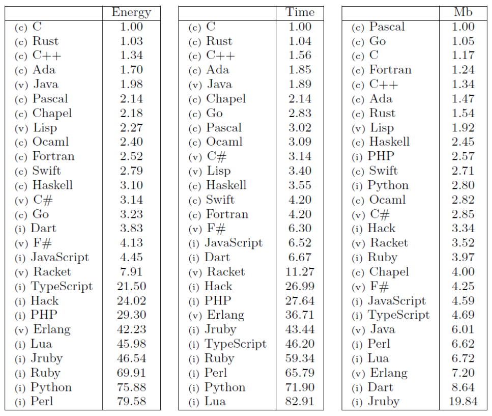

Rust Em 10 Minutos
História
- Criada em 2006 por Graydon Hoare.
- Patrocinada pela Mozilla em 2009.
- Versão 1.0 em 2015.
- Versão atual: 1.72
- Edition: 2021


Microsoft: 70 percent of all security bugs are memory safety issues
(2019)
Green Energy Language
"Speaking of languages, it's time to halt starting any new projects in C/C++ and use Rust for those scenarios where a non-GC language is required. For the sake of security and reliability. the industry should declare those languages as deprecated"
- Mark Russinovich, Azure CTO, 2022

Borrow Checker
(and lifetimes)
+ Good Syntax
+ Helpful Errors
fn main() {
let hello = String::from("Hello!");
{
let world = String::from("World!");
println!("{hello} {world}");
}
println!("{hello} {world}");
}
fn i_own_this_now(s: String) {
println!("Hello {s}!")
}
fn main() {
let name = String::from("Julio");
i_own_this_now(name);
println!("Goodbye {name}");
}
fn can_i_borrow_it_for_a_second(s: &str) {
println!("Hello {s}");
}
fn main() {
let name = String::from("Julio");
can_i_borrow_it_for_a_second(&name);
println!("Goodbye {name}");
}
func foo() {
regalo := Gift { .. }
channel <- regalo
regalo.open();
}
Good Syntax
StackOverflow Survey 2023: "Most Admired Language" (84.6%)
... pelo 8o ano seguido.
Helpful Errors
fn main() {
let a = 2;
a = 3;
println!("{}", a);
}
Helpful Errors
3 | let a = 2;
| -
| |
| first assignment to `a`
| help: make this binding mutable: `mut a`
4 | a = 3;
| ^^^^^ cannot assign twice to immutable variable
Helpful Errors
3 | let a = 2;
| -
| |
| first assignment to `a`
| help: make this binding mutable: `mut a`
4 | a = 3;
| ^^^^^ cannot assign twice to immutable variable
Helpful Errors
3 | let a = 2;
| -
| |
| first assignment to `a`
| help: make this binding mutable: `mut a`
4 | a = 3;
| ^^^^^ cannot assign twice to immutable variable
Cargo
- Dependency manager
- Build tool
- Test manager
- Distributable packages
- Uploader to the registry (crates.io)
Crates.io
"124,474 Crates in stock"
PyPI: "479,236 projects"
20 years vs 8